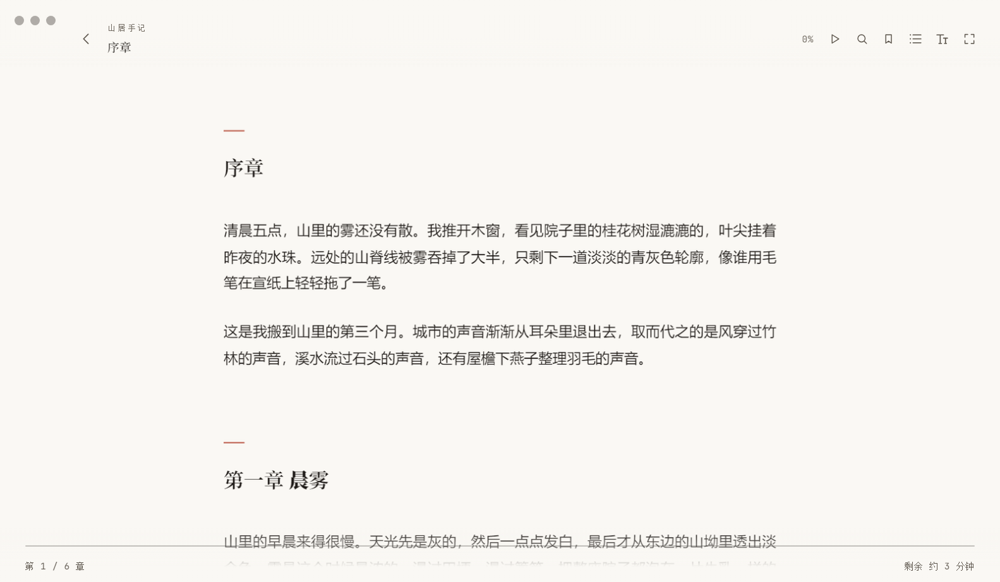

本地优先
书在磁盘上，索引在本地。断网、关服务器、换电脑，都不影响你接着读。
Folio 是一台 Windows 阅读器，也是一个独立的安卓阅读器。两端各自存书，只在局域网里交换进度、书签和阅读痕迹。


没有云、没有账号、没有上传。手机和电脑在同一个 Wi-Fi 下，进度自己走。
桌面端开一个局域网面板，手机上填一次地址和访问码。之后每次连上同一个网络，书架、进度、书签都会对齐。
书本身不强制同步：桌面端可以把书推到手机，手机也能把书拉回电脑。想各读各的，就只同步进度。
所有数据都落在本机磁盘，换设备时带走数据目录即可，不依赖任何第三方服务活着。
没有信息流，没有推荐，没有会员。打开就是书架。
书在磁盘上，索引在本地。断网、关服务器、换电脑，都不影响你接着读。
几款开源中文字体，一键装到本机。正文、标题、预览分别选，不联网也能用。
安卓端不是遥控器：没有桌面端也能导入、阅读、做笔记，连上后再对齐。
网页书源跑在独立进程，解析失败不会拖垮主界面；返回的文本只当内容，不当代码。
竖向、横向两种翻页，长图不断行；桌面与手机的记忆位置各自保留。
不登录、不订阅、不埋点。设置、书签、进度都是本地 JSON，随时能看、能备份。
桌面书架、沉浸阅读、安卓端，三张都是实际运行时的截图。往下滚，它们会在三维里退开。

字号、行距、页边距、背景纸色，逐项可调；中英文混排的字距与缩进也按中文习惯处理。
装进本机的字体立刻出现在正文里，不经过网页渲染，翻页时不会闪一下。

Windows 10 / 11 · Android 8.0+ · 免费开源，MIT 许可